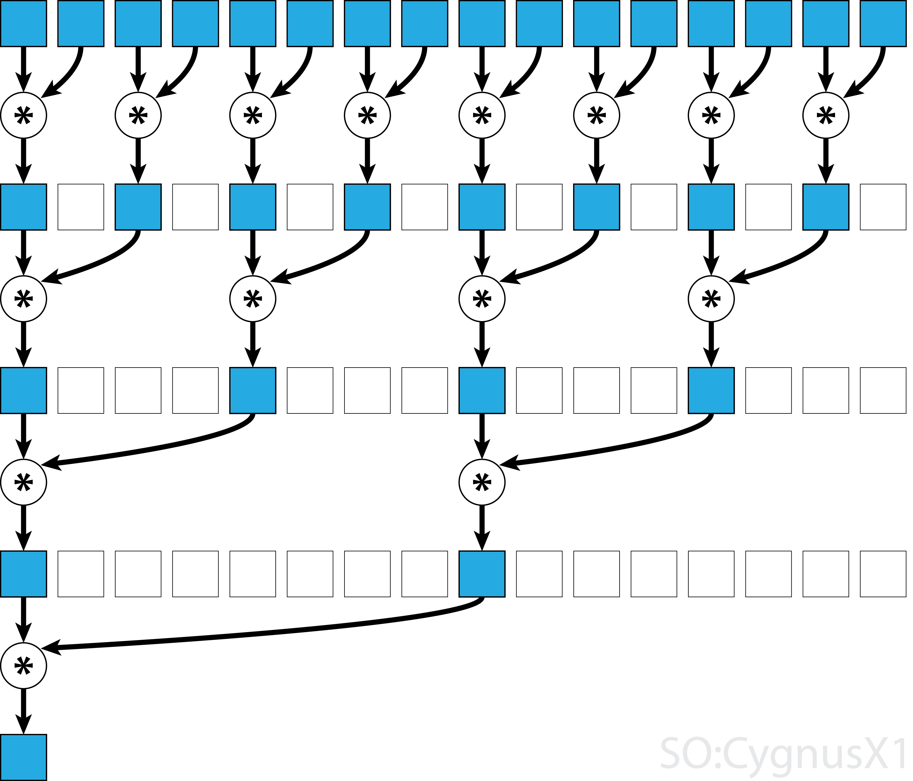

Week 10 Discussion & Q&A:
Parallelization for Hardware Accelerators (e.g., GPUs)
import Pkg Pkg.activate(".")
using CUDA, Test
CUDA.versioninfo()
CUDA runtime 12.2, artifact installation CUDA driver 12.2 NVIDIA driver 535.104.12 CUDA libraries: - CUBLAS: 12.2.5 - CURAND: 10.3.3 - CUFFT: 11.0.8 - CUSOLVER: 11.5.2 - CUSPARSE: 12.1.2 - CUPTI: 20.0.0 - NVML: 12.0.0+535.104.12 Julia packages: - CUDA: 5.0.0 - CUDA_Driver_jll: 0.6.0+4 - CUDA_Runtime_jll: 0.9.2+3 Toolchain: - Julia: 1.9.2 - LLVM: 14.0.6 - PTX ISA support: 3.2, 4.0, 4.1, 4.2, 4.3, 5.0, 6.0, 6.1, 6.3, 6.4, 6.5, 7 .0, 7.1, 7.2, 7.3, 7.4, 7.5 - Device capability support: sm_37, sm_50, sm_52, sm_53, sm_60, sm_61, sm_6 2, sm_70, sm_72, sm_75, sm_80, sm_86 1 device: 0: Tesla P100-PCIE-12GB (sm_60, 11.166 GiB / 12.000 GiB available)
Q: Are there any physical differences in the hardware between CPU cores and GPU cores (besides the fact that they are smaller)?
P100 GPU layout
 "
"
CPU chip layout

[CUDA.capability(dev) for dev in CUDA.devices()]
1-element Vector{VersionNumber}:
v"6.0.0"
Calling GPU on arrays
N = 10^6
1000000
begin x_d = CUDA.fill(1.0f0, N) # a vector stored on the GPU filled with 1.0 (Float32) y_d = CUDA.fill(2.0f0, N) # a vector stored on the GPU filled with 2.0 end; # Suppress output to notebook, unless enable scalar indexing
begin y_d .+= x_d @test all(Array(y_d) .== 3.0f0) end
Test Passed
function add_broadcast!(y, x) # GPU kernels are run asynchronously. # If you want to ensure that calculations are finished, you'll nee to use `CUDA.@sync` y .+= x return end
add_broadcast! (generic function with 1 method)
x_h = fill(1.0f0,N) y_h = fill(2.0f0,N) @time y_h .+= x_h @time y_h .+= x_h @time CUDA.@sync y_h .+= x_h @time CUDA.@sync y_h .+= x_h;
0.083283 seconds (90.27 k allocations: 6.043 MiB, 22.83% gc time) 0.000655 seconds (2 allocations: 64 bytes) 0.000738 seconds (2 allocations: 64 bytes) 0.000559 seconds (2 allocations: 64 bytes)
x_d, add_broadcast! z_d = CUDA.fill(2.0f0, N) @time add_broadcast!(z_d, x_d) @time add_broadcast!(z_d, x_d) @time CUDA.@sync add_broadcast!(z_d, x_d) @time CUDA.@sync add_broadcast!(z_d, x_d)
0.022327 seconds (10.07 k allocations: 684.856 KiB) 0.000031 seconds (31 allocations: 1.859 KiB) 0.000069 seconds (31 allocations: 1.859 KiB) 0.000073 seconds (31 allocations: 1.859 KiB)
Q: Would it make any sense to use a GPU over a CPU in parallel to run a for loop or something of that nature?
How to use GPUs very ineefficiently
function gpu_add1!(y, x) for i = 1:length(y) @inbounds y[i] += x[i] end return nothing end
gpu_add1! (generic function with 1 method)
function bench_gpu1!(y, x) CUDA.@sync begin @cuda gpu_add1!(y, x) end end
bench_gpu1! (generic function with 1 method)
begin bench_gpu1!(y_d, x_d) @elapsed bench_gpu1!(y_d, x_d) end
0.178834656
Parallelize over multiple threads
Q: Can you run 'for' loops in parallel on a GPU?
function gpu_add2!(y, x) index = threadIdx().x # this example only requires linear indexing, so just use `x` stride = blockDim().x for i = index:stride:length(y) @inbounds y[i] += x[i] end return nothing end
gpu_add2! (generic function with 1 method)
let fill!(y_d, 2) @cuda threads=256 gpu_add2!(y_d, x_d) @test all(Array(y_d) .== 3.0f0) end
Test Passed
function bench_gpu2!(y, x) CUDA.@sync begin @cuda threads=256 gpu_add2!(y, x) end end
bench_gpu2! (generic function with 1 method)
begin bench_gpu2!(y_d, x_d) @elapsed bench_gpu2!(y_d, x_d) end
0.002022622
Q: Can you explain what does it mean that "all calls to the GPU are scheduled asynchronous"?
A: You have to explicitly state when you want a sychronization event.
@time @cuda threads=256 gpu_add2!(y_d, x_d) @time @cuda threads=256 gpu_add2!(y_d, x_d)
0.000043 seconds (27 allocations: 1.375 KiB)
0.000071 seconds (27 allocations: 1.375 KiB)
CUDA.HostKernel for gpu_add2!(CUDA.CuDeviceVector{Float32, 1}, CUDA.CuDevic
eVector{Float32, 1})
@time CUDA.@sync @cuda threads=256 gpu_add2!(y_d, x_d) @time CUDA.@sync @cuda threads=256 gpu_add2!(y_d, x_d)
0.002077 seconds (30 allocations: 1.453 KiB)
0.002153 seconds (30 allocations: 1.453 KiB)
CUDA.HostKernel for gpu_add2!(CUDA.CuDeviceVector{Float32, 1}, CUDA.CuDevic
eVector{Float32, 1})
Paralelizing with multiple blocks

function gpu_add3!(y, x) index = (blockIdx().x - 1) * blockDim().x + threadIdx().x if index <= length(y) @inbounds y[index] += x[index] end return end
gpu_add3! (generic function with 1 method)
let numblocks = ceil(Int, N/256) fill!(y_d, 2) @cuda threads=256 blocks=numblocks gpu_add3!(y_d, x_d) @test all(Array(y_d) .== 3.0f0) end
Test Passed
function bench_gpu3!(y, x) numblocks = ceil(Int, length(y)/256) CUDA.@sync begin @cuda threads=256 blocks=numblocks gpu_add3!(y, x) end end
bench_gpu3! (generic function with 1 method)
begin bench_gpu3!(y_d, x_d) @elapsed bench_gpu3!(y_d, x_d) end
5.3245e-5
Choosing Number of threads/block & Number of blocks
CUDA.attribute(device(), CUDA.DEVICE_ATTRIBUTE_MULTIPROCESSOR_COUNT)
56
CUDA.attribute(device(), CUDA.DEVICE_ATTRIBUTE_MAX_THREADS_PER_BLOCK)
1024
CUDA.attribute(device(), CUDA.DEVICE_ATTRIBUTE_MAX_SHARED_MEMORY_PER_BLOCK)/1024 #KB
48.0
CUDA.attribute(device(), CUDA.DEVICE_ATTRIBUTE_WARP_SIZE)
32
CUDA.attribute(device(), CUDA.DEVICE_ATTRIBUTE_MAX_BLOCK_DIM_X), CUDA.attribute(device(), CUDA.DEVICE_ATTRIBUTE_MAX_BLOCK_DIM_Y), CUDA.attribute(device(), CUDA.DEVICE_ATTRIBUTE_MAX_BLOCK_DIM_Z)
(1024, 1024, 64)
CUDA.attribute(device(), CUDA.DEVICE_ATTRIBUTE_MAX_GRID_DIM_X), CUDA.attribute(device(), CUDA.DEVICE_ATTRIBUTE_MAX_GRID_DIM_Y), CUDA.attribute(device(), CUDA.DEVICE_ATTRIBUTE_MAX_GRID_DIM_Z)
(2147483647, 65535, 65535)
CUDA.attribute(device(), CUDA.DEVICE_ATTRIBUTE_L2_CACHE_SIZE)/1024^2 # MB
3.0
begin kernel = @cuda launch=false gpu_add3!(y_d, x_d) config = launch_configuration(kernel.fun) threads3 = min(N, config.threads) blocks3 = cld(N, threads3) threads3, blocks3 end
(1024, 977)
begin fill!(y_d, 2) kernel(y_d, x_d; threads=threads3, blocks=blocks3) @test all(Array(y_d) .== 3.0f0) end
Test Passed
function bench_gpu4!(y, x) kernel = @cuda launch=false gpu_add3!(y, x) config = launch_configuration(kernel.fun) threads4 = min(length(y), config.threads) blocks4 = cld(length(y), threads4) CUDA.@sync begin kernel(y, x; threads=threads4, blocks=blocks4) end end
bench_gpu4! (generic function with 1 method)
begin bench_gpu4!(y_d, x_d) @elapsed bench_gpu4!(y_d, x_d) end
5.2189e-5
Q: I am still unsure about the implementation of a GPU kernal. How common is this and how should we know whether to use it over a generic GPU array interface?
A: Generaly, I'd try the array interface first (if you can). Then decide if you want to try to get further performance boost by reducing memory transfers.
Generating Pseudo-random numbers on the GPU
@elapsed rand_nums_h = rand(N)
0.13587316
@elapsed (CUDA.@sync rand_nums_d = CUDA.rand(N))
0.569196675
rand_nums_h
1000000-element Vector{Float64}:
0.6879696280197086
0.5032090919247147
0.7791856068030752
0.29355437146459895
0.4405612594806362
0.06755844243213227
0.4381513039636865
0.6834742367233528
0.8414358865611535
0.5510702270846274
0.5156433949058279
0.34725541275838345
0.8621208321294287
0.5442895751196315
⋮
0.9138208287927976
0.8499825272572508
0.4360981392543877
0.6252207119597106
0.3347409995609587
0.5348679254280373
0.25678986764622225
0.18075486128794116
0.4237586741614854
0.2863812774327106
0.186074919449422
0.4076048859700201
0.7429136956647424
collect(rand_nums_d)
1000000-element Vector{Float32}:
0.9847321
0.7582767
0.2747971
0.06025254
0.18360691
0.93456244
0.57306564
0.13025342
0.58057606
0.77656764
0.10709424
0.88696307
0.32356238
0.87416947
⋮
0.082201414
0.6620423
0.22277841
0.63350964
0.46225932
0.7771866
0.46655184
0.46557704
0.46574757
0.25220126
0.84250367
0.88466334
0.481679
CUDA.@allowscalar rand_nums_d[1]
0.9847321f0
Using GPU for a more substantial function
""" ecc_anom_init_guess_danby(mean_anomaly, eccentricity) Returns initial guess for the eccentric anomaly for use by itterative solvers of Kepler's equation for bound orbits. Based on "The Solution of Kepler's Equations - Part Three" Danby, J. M. A. (1987) Journal: Celestial Mechanics, Volume 40, Issue 3-4, pp. 303-312 (1987CeMec..40..303D) """ function ecc_anom_init_guess_danby(M::Real, ecc::Real) my_pi = convert(typeof(M),pi) @assert -2*my_pi<= M <= 2*my_pi @assert 0 <= ecc <= 1.0 k = convert(typeof(M), 0.85) if M < zero(M) M += 2*my_pi end E = (M<my_pi) ? M + k*ecc : M - k*ecc end;
""" update_ecc_anom_laguerre(eccentric_anomaly_guess, mean_anomaly, eccentricity) Update the current guess for solution to Kepler's equation Based on "An Improved Algorithm due to Laguerre for the Solution of Kepler's Equation" Conway, B. A. (1986) Celestial Mechanics, Volume 39, Issue 2, pp.199-211 (1986CeMec..39..199C) """ function update_ecc_anom_laguerre(E::Real, M::Real, ecc::Real) es = ecc*sin(E) ec = ecc*cos(E) #(es, ec) = ecc .* sincos(E) # Does combining them provide any speed benefit? F = (E-es)-M Fp = one(M)-ec Fpp = es n = 5 root = sqrt(abs((n-1)*((n-1)*Fp*Fp-n*F*Fpp))) denom = Fp>zero(E) ? Fp+root : Fp-root return E-n*F/denom end;
function calc_ecc_anom(mean_anom::Real, ecc::Real, tol::Real = 1.0e-8) @assert 0 <= ecc <= 1.0 @assert 1e-16 <= tol < 1 #M = rem2pi(mean_anom,RoundNearest) M = mod(mean_anom,2*convert(typeof(mean_anom),pi)) E = ecc_anom_init_guess_danby(M,ecc) local E_old max_its_laguerre = 200 for i in 1:max_its_laguerre E_old = E E = update_ecc_anom_laguerre(E_old, M, ecc) if abs(E-E_old) < tol break end end return E end
calc_ecc_anom (generic function with 2 methods)
function calc_true_anom(ecc_anom::Real, e::Real) true_anom = 2*atan(sqrt((1+e)/(1-e))*tan(ecc_anom/2)) end
calc_true_anom (generic function with 1 method)
function gpu_calc_ecc_anom!(ecc_anom, mean_anom, ecc, tol) #@assert 1e-16 <= tol < 1 #@assert size(ecc_anom) == size(mean_anom) == size(ecc) index = (blockIdx().x - 1) * blockDim().x + threadIdx().x if index <= length(ecc_anom) @inbounds ecc_anom[index] = calc_ecc_anom(mean_anom[index],ecc[index]) end return end
gpu_calc_ecc_anom! (generic function with 1 method)
function bench_gpu_calc_ecc_anom!(ecc_anom, mean_anom, ecc, tol) @assert size(ecc_anom) == size(mean_anom) == size(ecc) kernel = @cuda launch=false gpu_calc_ecc_anom!(ecc_anom, mean_anom, ecc, tol) config = launch_configuration(kernel.fun) threads = min(length(ecc_anom), config.threads) blocks = cld(length(ecc_anom), threads) CUDA.@sync begin kernel(ecc_anom, mean_anom, ecc, tol; threads=threads, blocks=blocks) end end
bench_gpu_calc_ecc_anom! (generic function with 1 method)
M=1000000
1000000
begin ecc_anom_d = CUDA.zeros(Float64,M) ecc_d = CUDA.rand(Float64,M) mean_anom_d = CUDA.rand(Float64,M) CUDA.@sync mean_anom_d .*= 2π tol = 1e-8 kepler_kernel = @cuda launch=false gpu_calc_ecc_anom!(ecc_anom_d, mean_anom_d,ecc_d,tol) kepler_config = launch_configuration(kepler_kernel.fun) end
(blocks = 112, threads = 576)
1000*@elapsed bench_gpu_calc_ecc_anom!(ecc_anom_d,mean_anom_d,ecc_d,tol)
83.743085
collect(ecc_anom_d)
1000000-element Vector{Float64}:
4.588595649753934
3.657417760865393
5.113773395865323
5.232477710011794
3.632795060761569
2.34880398700522
1.9945722960199732
4.85174201306915
4.427866509409915
3.0623953811055826
4.1690878312116535
2.137072258304912
2.8184246764919223
1.624170521995028
⋮
1.0692723748018478
3.8965601853719165
3.762751547317824
1.3302007249922112
4.89699201178899
1.1366375439130019
3.7805938457515285
3.8783886904439546
3.453481754751317
3.0397477205928842
0.744534710140274
4.554892991725758
6.057370356069308
begin ecc_anom_h = collect(ecc_anom_d) mean_anom_h = collect(mean_anom_d) ecc_h = collect(ecc_d) 1000*@elapsed ecc_anom_h_comp = calc_ecc_anom.(mean_anom_h,ecc_h) end
278.955075
maximum(abs.(ecc_anom_h_comp .- ecc_anom_h))
2.842170943040401e-14
GPU Reductions

Q&A
Q: Is it always faster to use GPU than CPU? When is CPU a better option than GPU?
A: No. See Lab 8.
Q: GPUs are designed for running parallel structure operations, so I don't understand when it is advantageous to run a single-stream CPU.
A: When you don't have enough computing (per memory access) to justify using a GPU.
Q: It seems like GPUs can be quite complicated to work with, and in some cases favor lower precision outputs for higher performance. In what circumstances would one choose to work on a GPU rather than CPUs?
A: When there's a >10x performance benefit (for your required accuracy).
Q: How can we determine whether a certain Julia type is compatible with a GPU?
A: Your standard integers, floats and complex types are implemented. Arrays, and that's about it.
Q: Why is there latency for RAM to communicate with the GPU's VRAM? Could a system be converted fully to VRAM or can VRAM not operate as RAM?
A: They're two separate memory systems.
Q: What is stopping/discouraging us from building computer systems primarily with GPUs instead of CPUs so as to alleviate the memory transfer limitation for GPUs? A: Not all computations run efficiently on GPUs